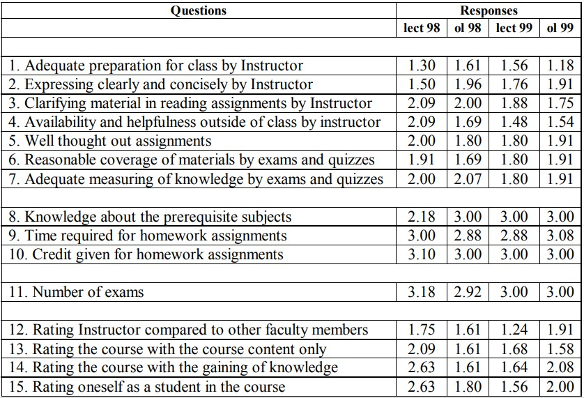

<html>
    <head>
        <link rel="stylesheet" href="style.css">
    </head>
    <body style="padding: 15%">
        
        <p>semester, the class was advertised to all ASC faculty using an email listserv
provided by the ASC. A promotional website was created and posted so that
interested students could preview the website operation, class structure,
content and how the class worked. During Spring 1999, 14 students from
Oklahoma State, Texas A&amp;M, Texas Tech, Auburn, University of Wisconsin-Stout and Cal Poly-San Luis Obispo participated in the online class along
with 26 OU students in the lecture group. During these classes all students
used the website for information, communication and to obtain homework
exercises. The instructor decided to fully optimize the opportunity students
had to work independently by making examinations open book with no
outside faculty intervention required for online students or lecture students.
Exams were similar to those given in the 1998 classes, but used more
problem-solving and discussion questions. Students confirmed an ethics
statement on each exam, stating that they worked individually.</p>
        <p>Because it was the second time the online class was offered, the author
took special note of the reasons that students requested enrollment. Students’
reasons for taking the class were very similar to the 1998 class. Most students
viewed the class as a convenient means to fill a curriculum gap with minimal
effort required of on-site faculty. For many the class was considered acceptable as an elective, a replacement for a missed class or as makeup work.
Several students were aware of the class because of affiliation with an online
class member or a faculty sponsor from the 1998 class. Several students took
the class because the content was not addressed in their curriculums and they
wanted to go into equipment intensive construction.</p>.
        <center><h1>QUALITY COMPARISON OF THE LECTURE AND ONLINE CLASSES</h1></center>
        <h2>Comparison Methodology</h2>
        <p>Paralleling the CNS 4913 class deliveries provided a unique opportunity
for comparison of students’ quality perceptions of traditional lecture and
online strategies. The author believed that if the online students’ quality
perceptions and the outcome assessment grades were similar to those of the
lecture class, then it could be assumed that the online class was as effective
as the lecture class and the quality of the classes was equivalent.</p>
        <p>With the help of Ken Williamson, Ph.D., Texas A&amp;M University, the
1998 lecture and web student groups were compared to determine whether the
participants were similar in background, knowledge and attitude. The Test of
Logical Thinking (TOLT) was administered between groups to comparebasic reasoning ability. The test was given once as a pretest. The Test of
Construction Attitude (TOCA) was used to investigate empowerment,
attitude and motivation toward professional construction management. It
was also used to evaluate student attitudes and motivation toward learning
and instruction within and between groups. The TOCA was administered
pre- and post-course.</p>
        <p>The OU CoA Non-Studio Course Evaluation was used for the 1998 and
1999 classes to gather students’ perceptions of instructor performance, course
content and self-evaluation at the end of each semester. Additional information was also collected from the online classes using a participant survey at the
conclusion of the course offerings, instructor observations and online participant communications.</p>
        <h2>Comparison Results</h2>
        <p>Results of the TOLT instrument indicated that the difference between the
two groups was not significant. Results of the TOCA indicated that the online
students considered themselves to be more professional than the lecture class.
These instruments were not used in the Spring 1999 class.</p>
        <p>Results of the OU CoA Non-Studio Course Evaluation for the CNS 4913
lecture and online classes are shown below. The questions are listed in order
as they appear on the evaluation form. The mean evaluation ratings for the
class for each question are noted in the responses columns on the right.
Columns list the mean evaluations by delivery method (lect = lecture or ol =
online) and the semester of the class (98 or 99). It should be noted that
responses in the web classes have greater percentage influence on the overall
average ratings for the questions than in the larger lecture classes.</p>
        <p>The course evaluation instrument is divided into four categories. Questions 1-7 rate qualities of the instructor and administration of the class. A
rating scale of 1 = definitely yes, and 5 = definitely no was used. Questions 8-
10 rate prerequisite knowledge required for the class and class assignments.
A rating scale of 1 = far too much, and 5 = far too little was used. Question 11
rates the number of exams. A rating scale of 1 = far too many, and 5 = far too
few was used. The last category, questions 12-15 compare the Instructor to
other Instructors and the students’ perception of themselves. A rating scale of
1 = excellent, and 5 = poor was used.</p>
        <p>Upon initial review, it appears that several of the evaluation questions are
not applicable because of the online delivery of the class. For instance,
questions dealing with instructor communication (Questions 2 and 4) and
comparison of the instructor to other faculty members (Question 12) do not
seem applicable because of the anonymity of the class delivery. These</p>
        <p><i>Table 1: Student evaluation results</i></p>
        <center></center>
        
        <p>questions are still applicable used in the context of online class delivery.
Effective communication and availability of the instructor are still an
integral part of a successful class experience regardless of the delivery
method. “No reply” to an email or missing a Chat session parallels missing
an “office hour.” Effective communication demands fulfilling defined
obligations to students, such as office hours or online Chat sessions. The
instructor’s performance can be compared to other construction faculty at
the participants’ programs. Though the online relationship is mostly
anonymous and using email, the instructor’s personality and attitudes are
still very evident in correspondence and grading. The instructor’s effort to
be personable in email and telephone conversations and to share observations and interests can greatly influence students’ perception of the
instructor, just as in face-to-face communication.</p>
        <p>Eleven assignments, three exams and a comprehensive final exam
were completed during both class offerings. There was no notable difference in any homework or exam grades. The average final grades for the
1998 lecture and online classes were 86.38 and 81.64 respectively. The
average final grades for the 1999 lecture and online classes were 85.58 and
87.28 respectively.</p>
        <h2>Observations Based on Comparison</h2>
        <p>The actual numerical ratings for each question are not the focus of this
comparison. It is very important, however, that ratings for both methods of
class delivery were consistent for both semesters the classes were offered.
There are no trends or evidence of different quality perception between the
classes based upon answers in the survey. The final grades for online and
lecture participants were not significantly different for either course offering.
To the author, these comparisons demonstrate that the teaching techniques
and styles are suitable for both delivery methods. Based upon this comparison
of the Construction Equipment and Methods classes, the author also concludes that students can evaluate online and lecture classes using the same
quality criteria. It should be noted, however, that meeting and exceeding the
quality expectation of any class, regardless of the delivery method, is strongly
influenced by the motivation of the instructor and students.</p>
        <p>The web classes ratings of Question 2 (Expressing clearly and concisely
by instructor) and Question 4 (Availability and helpfulness outside of class by
instructor) are very close for both semesters. These ratings are consistent with
the lecture classes’ ratings. It should be noted that of the 26 online students
completing the Non-Studio Class Evaluation during the two class offerings,
three participants marked “not applicable” on the assessment form for these
questions.</p>
        <p>Though still in the excellent (rating = 1) to good (rating = 2) range like
the Spring 98 classes, the rating of Question 12 (Rating instructor compared
to other faculty members) for Spring 99 was 1.24 for the lecture class and 1.91
for the online class. A possible reason for this difference is that the online
students that semester did not interact with the instructor enough to form a
more favorable opinion.</p>
        <p>Interaction using email, the telephone or Chat demands greater communication efficiency than oral discussion in a classroom setting. This is perhaps
the greatest limitation of the online delivery method. Based upon the subjective survey at the end of the classes, almost all online students felt this was the
greatest weakness of the class. Several suggested that mandatory times for
interaction be included in the class format. Contradictory to this suggestion,
it should be noted that when the instructor was available in Chat at announced
specified times, participation by online students was limited. This perhaps can
be attributed to the great effort expended by the instructor to communicate in
a timely, understandable and comprehensive manner concerning content
questions and feedback about students’ performance. Based upon the subjective survey at the end of the classes, the availability of the class on the Internetall the time was the greatest strength. Many students also commented about
the effectiveness of the class website.</p>
        <p>Performance levels of several individuals in both groups decreased at the
end of the semester. This is a trend typically occurring in most classes. It was
typical for students to collaborate on homework with other class members at
their universities. Rarely did they collaborate with someone from another
university, unless required for a specific exercise.</p>
        <center><h1>DIRECTIONS AND FUTURE CHALLENGES</h1></center>
        <h2>Meeting the Quality Challenges</h2>
        <p>To meet the challenges of assuring online and traditional class quality
equivalence, several items must be considered when developing and administering online classes. Based upon the author’s experience, the following
items should be part of the quality assurance strategy for online class
development and administration. These items should be considered regardless of the delivery method, but deserve special consideration due to the nature
of online classes.</p>
        <p><i>Match Content to Required Assessment</i></p>
        <p>Testing required for evaluation of a student’s understanding and use
of presented information is the primary content suitability consideration
for online delivery. Rigor of exercises and tests must be equally demanding for online and lecture classes to be considered equivalent.</p>
        <p>If group or essay-based exercises and exams are used, the class is a strong
candidate for online delivery. Authentic performance exercises assess the
student’s ability to apply knowledge to solve real-life problems. Exercises can
require planning and application of knowledge in new and different ways. The
abundant and convenient resources available online can add great depth to
these types of problem-solving exercises. Classes incorporating a large visual
component, such as the construction equipment class, are very good examples
of this suitability. Manufacturers’ websites providing information about
equipment, specifications and services are ideal for many technology subjects. One of the greatest advantages of the Internet as a medium for delivering
a class is the ability to greatly enhance and increase the information that can
be included in class content. With minimal instructor effort, exploration of
information contained in linked websites was incorporated into equipment
selection and management learning exercises. Developing a custom websiteis an excellent opportunity for the instructor to offer self-collected resources
and to express observations and suggestions about specific topics not covered
in traditional class materials. Much of the content of the cns4913online
website addressed topics that the instructor felt were inadequately addressed
in the textbook and other course resources.</p>
        <p>Classes requiring outside supervision for exercises and exams are not
the best candidates for online delivery. The assessment method requires
greater effort to assure the demonstrated learning. If this cannot be done
efficiently and economically, than perhaps the content is not as suitable
for online delivery at this time. “Developing effective and reliable assessment methods for online class participants perhaps will demand the
greatest effort for innovation and departure from traditional practices.”
(Ryan, 1999).</p>
        <p>“Open book” testing is the easiest assessment method for online
classes, because it requires the least amount of faculty intervention.
However the rigor of “open book” assessment is suspect when using
automatically graded true/false, yes/no, numerical, fill-in-the-blank, specific phrase or multiple-choice answers. Many times the right answer is
easily found in the content if the student takes the time to search. Unless
time limits are imposed for completion of questions or activities, developed competency is not truly demonstrated. It should be noted, however,
that this form of combining assessment and content review is an effective
means of teaching online. Questions can be used to prompt the student to
review certain content or complete an activity. Exercises or assessment
can be crafted so that questions are sequenced and must be answered
correctly before proceeding to new information. This is an effective
means of focusing students’ efforts on required knowledge and regulating
their progression through the class.</p>
        <p>As assessment becomes more interactive and automated greater responsibility will be placed on the student to work independently and follow
specified guidelines. Efficient verification of students’ identities is a limitation for online delivery today. Eventually, technology will overcome this
issue, but for now it strongly influences the assessment technique that is used.
Computerized adaptive testing has great potential for minimizing this concern. Using this method, the difficulty of the next question is determined or
adjusted based on the previous responses. Selection of questions is database
driven and the assessment fashions itself individually for each student as
answers are provided. This is an excellent format for totally automated,
individualized online assessment.</p>
        <p><i>Determine Required Collaboration and Communication</i></p>
        <p>Two of the primary benefits of using the Internet are the opportunity to
work independently at one’s own pace and to communicate anonymously and
economically from a remote site. The instructor must decide how strongly
these benefits are to be embraced in the online administration strategy.
Required collaboration demands much greater communication effort and
efficiency. Success of exercises requiring collaboration will greatly depend
on students’ characteristics, backgrounds and motivations. Group interaction
is an effective teaching technique, but must be used appropriately. Communicating face-to-face is much easier than current email, Chat or desktop-todesktop audio/video communication. It should be noted that communication
using the Internet will continue to become more efficient as real-time audio
and video are more effectively combined and delivered. This future interface
will minimize many of the current communication limitations.</p>
        <p>Communications required for an instructor-paced online class are similar
to communications required for traditional lecture classes. The instructor
sequences content coverage, exercise durations and assessment. Communication by announcement on the website or email from the instructor is
typically required for class activities to be initiated and completed. Classes
incorporating extensive group collaboration, group interaction and a feedback loop require greater communication effort by the instructor and students.
The instructor should anticipate spending extra time communicating with
students and motivating these students to communicate with each other. As
observed by the instructor, during collaborative online class activities, effective and timely communication between group members has the potential to
be as challenging as the actual completion of the exercise objectives.</p>
        <p>An automated or self-paced class format requires the least instructor
interaction for class administration. This format truly embraces the benefits
of the Internet. However, creating and implementing an automated online
format requires much greater initial effort than an instructor-paced class. The
entire content and delivery strategy must be determined before implementing
the class. Automatic mechanisms must be built into the class to pace student
content review and assessment. Much greater effort must be expended to
make content presentation organized, comprehensive and interesting. Interactive features, video and animation can be used to support learning and make
the experience more enjoyable for the student.</p>
        <p><i>Optimize Internet Capabilities</i></p>
        <p>Internet presentation and communication technologies are becoming
increasingly “user friendly,” incorporating more efficient and interactive features. Having an understanding of both content and these technological
capabilities will greatly enrich the style and delivery format that can be
incorporated into an online class. Online classes fully optimizing these
capabilities to deliver content, exercises and assessment have the potential to
be better than traditional lecture classes. Meeting this challenge demands the
greatest instructor organization and coordination effort.</p>
        <p>Internet capabilities are often incorporated into online classes by someone other than the instructor of the class or by placing packaged information
into courseware shells to create class websites. The drawback to these
methods of online class creation is that the Instructor may not understand the
capabilities of Internet for making content delivery interactive and more
engrossing to the student. The use of posted PowerPoint slides or videos of
recorded lectures is a rather non-creative approach to content delivery using
the Internet. This is basically using the Internet for traditional teaching. If
information delivery without regard for the quality of the experience is the
objective, then this format is suitable. Ultimately these classes will be
perceived as “correspondence courses,” using the Internet for information
transfer and communication.</p>
        <h2>The Online Class Quality Challenge</h2>
        <p>One of the primary reasons that teaching takes place in a classroom is that
it is the easiest medium for content delivery and learning assessment. It is the
path of least resistance for teaching and learning. The lack of face-to-face
interaction makes the online experience much more demanding. Today, the
online experience requires more motivation for successful teaching and
learning than the traditional method. The instructor’s motivation and enthusiasm to create and administer an effective class and the students’ willingness
to accept a greater responsibility for communicating are two of the primary
influences on class success. A necessary step for any class quality assurance
is determining how quality is to be evaluated by students. Comparison of
assessment results and class evaluations for the Construction Equipment and
Methods classes supports the NCIEF recognition that online construction
courses can and should be evaluated the same as traditional lecture classes.
Quality expectations for online and lecture classes should be the same for the
classes to be considered equal. Otherwise, online classes will continue to be
considered an “alternative” or the “next best thing” to attending traditional
lecture classes. As part of a quality assurance plan, online instructors should
seek to expand teaching methods and approaches using the Internet. There is
great potential for using automated online content delivery for self-paced
interactive learning exercises taking advantage of animation, video and audio. Content can be crafted to take advantage of the growing pool of
resources available on the Internet.</p>
        <p>How these capabilities are embraced should be part of an online class
quality assurance strategy. Offering resource rich online classes using the
Internet is a cost efficient opportunity for industry and academia to partner.
There is great potential for exceptional classes to be industry-sponsored
productions, combining emerging capabilities of the Internet, the best Instructors and the latest industry driven content.</p>
        <center><h1>REFERENCES</h1></center>
        <p>Dominguez, P. S. and Ridley, D. (1999). Reassessing the Assessment of
Distance Education Courses. Available on the World Wide Web at:
http://www.thejournal.com/magazine/vault/A2223.cfm.</p>
        <p>Ehrmann, S. C. (1999). Access and/or Quality? Redefining Choices in the
Third Revolution. Available on the World Wide Web at: http://
www.tltgroup.org/resources/or%20quality.htm.</p>
        <p>Kubala, T. (1998). Addressing Student Needs: Teaching on the Internet.
Available on the World Wide Web at: http://www.thejournal.com/
magazine/vault/A2026.cfm</p>
        <p>The Quality Assurance Agency for Higher Education. (2001). Distance
Learning Guidelines. Available on the World Wide Web at: http://
www.qaa.ac.uk/public/dlg/guidelin.htm.</p>
        <p>Ryan, R. (1999). Best practice suggestions for custom building a technology
class website and administering the class. <i>Journal of Construction
Education.</i> Available on the World Wide Web at: http://www.ascweb.org/
jce/, 4(1), 4-17.</p>
        <p>Ryan, R. C. (2000). Student assessment comparison of lecture and online
construction equipment and methods classes.<i> T. H. E. Journal</i>, 27(6),
78-83.</p>
        <p>Schulman, A. H. and Sims, R. L. (1999). Learning in an online format
versus an in-class format: An experimental study.<i> T. H. E. Journal</i>,
26(11), 54-56.</p>
        <p>Suen, H. K. and Parkes, J. (2001). Challenges and Opportunities in Distance
Education Evaluation. Available on the World Wide Web at: http://
www.music.ecu.edu/DistEd/EVALUATION.html.</p>
        <center><h1>Section III<br>
Implementing Distance
Education: Programs,
Designs and Experiences
</h1></center>
        
        
        
        
        
    </body>
</html>